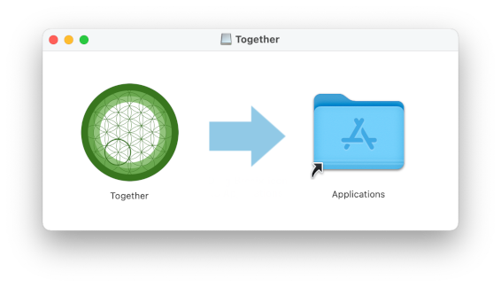
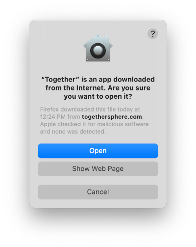

Welcome to the Mac install page for Together Test. Here is the link to the dmg file that will install Together Test on your Mac: Together Test.dmg
Together supports Macbooks and Mac desktop computers running OS X version 10.13 (High Sierra) and later.
For Windows, go here
For Linux, go here
Together does not currently have a version for Chromebook, Android, or iOS (iPhone/iPad).
Download the dmg file linked at the top of this page. This file is small and will download quickly. Install it as you would any dmg file. If you feel comfortable without further instructions, then you don’t need to read the long version. In that case, some key things you need to know are:
When you clicked on the Together.dmg link at the top of this page, your web browser downloaded it. You can see it at the bottom of your browser window or find it in your Downloads directory. Double-click on Together.dmg to open it. You will see a window that looks like this:
In the window, move the green Together icon into the Applications folder by clicking and dragging. Then go to the Applications folder (you can do this by double-clicking on the folder in the image) and find the green Together icon. Double-click this icon to launch Together for the first time. Select Open in the dialog that pops up:
Then you will see a picture of a desert oasis with a red bar indicating the progress of the update. This update can take a long time the first time you launch because it is downloading everything that you need to run Together. Next time you launch, Together will download only the things that have changed, which will happen quickly.

On the Big Sur version of OS X, the first time you start Together it will take a long time to launch. We believe this is due to checks that the operating system performs to verify the safety of any newly installed application.
When the update is finished, the Welcome screen will appear. This screen asks you to enter your Personal Key:

Your Personal Key is private to you and should have been sent to you by email. Copy it into the field and click Enter. Now Together is fully installed. You will find yourself in The gathering. Poke around and have fun, or read about it here.
From now on you will always launch Together by clicking the green icon. We suggest you drag it to your dock for quick access:
While Together is running, it will show up as a blue icon on your dock: